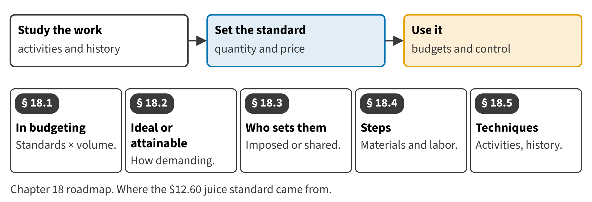

Part III · Costing systems and business processes · Chapter 18
Setting Standards: The Standard Cost Card
وضع المعايير: بطاقة التكلفة المعيارية
Since Chapter 5 this book has used one number for a case of juice: a standard cost of $12.60. The division's controller did not invent it. It came from supplier quotes, a yield study, a stopwatch, the payroll and a long meeting with the line supervisors. This last chapter of Book 2 shows how.

Start here
Then
What this chapter is tested on
| LOS | Official statement (ICMA, 2024) | In plain words | Depth here |
|---|---|---|---|
| B.2.l | demonstrate an understanding of the use of cost standards in budgeting | Explain how cost standards are used in budgeting. | Full treatment |
| B.2.m | differentiate between ideal (theoretical) standards and currently attainable (practical) standards | Tell ideal (theoretical) standards from currently attainable (practical) standards. | Full treatment |
| B.2.n | differentiate between authoritative standards and participative standards | Tell authoritative standards from participative standards. | Full treatment |
| B.2.o | identify the steps to be taken in developing standards for both direct material and direct labor | List the steps in setting direct material and direct labor standards. | Full treatment + Extended Example |
| B.2.p | demonstrate an understanding of the techniques that are used to develop standards, such as activity analysis and the use of historical data | Explain the techniques used to set standards, such as activity analysis and historical data. | Full treatment |
| D.5.j | explain the concept of continuous improvement and how it relates to implementing ideal standards and quality improvements | Explain how continuous improvement moves standards toward the ideal. | Introduced (full in Chapter 16) |
The official statements are quoted from the ICMA Learning Outcome Statements (effective September 1, 2024). The plain-words column restates them in simpler English. The exam may test any outcome up to Level C.
What you already know
Chapter 5 used standard costing to cost products, and Chapter 16 treated the ideal standard as the direction of improvement. This chapter builds the standard cost card itself, and prepares the ground for variance analysis in Book 3.
The 8 key terms
Every scene has Check Answers and Try Again. Try Again reshuffles rather than revealing. When you are wrong, the first thing you read is the reason for the option you chose, taken from the book's own explanations. Progress is saved in this browser.